class: center, middle ## QGIS Workshop ### DSPG Summer Program ### June 25, 2020 ##### Questions? email Professor Seeger cjseeger@iastate.edu _Use arrow keys to move forward/backwards through slide show._ --- Over the next 4 days you will be introduced to tools for working with spatial data. Today you will be introduced to GIS using the free and opensource software <a href="https://qgis.org" target="_blank">QGIS</a> #### Today's agenda: 1. Software / Environment Setup 1. Introduction to GIS - <a href="https://geojson.io" target="_blank">Geojson.io</a> - <a href="https://qgis.org" target="_blank">QGIS.org</a> and Exploring Sample Data 1. QGIS Interface and Custom Setup 1. Adding Data 1. Creating a Thematic Map (vacation states) 1. Map Symbolization I (basic labeling if time permits) *Lunch Break* 1. Table editing (modify the vacation states table) 1. Accessing Census Data and Geometry 1. Joining Census Data to map Geometry 1. Map Symbolization II 1. Map Layout 1. Map Query and Export 1. Intro to Geoprocessing: Summer Roadtrip Route (Buffers and Intersect) 1. Spatial Join --- #### Software / Environment Setup 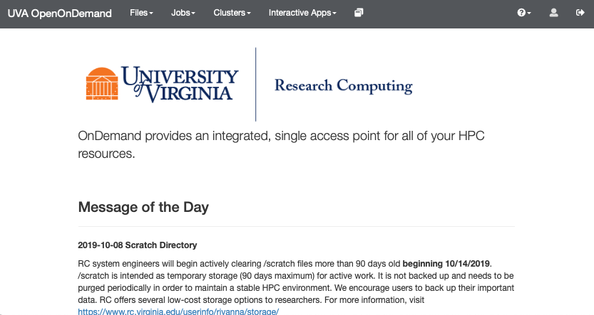 --- #### Software / Environment Setup 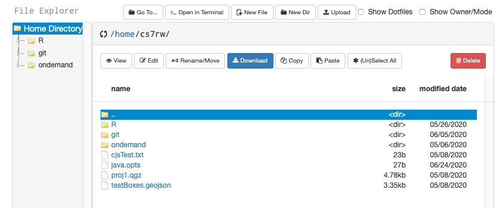 --- #### Software / Environment Setup 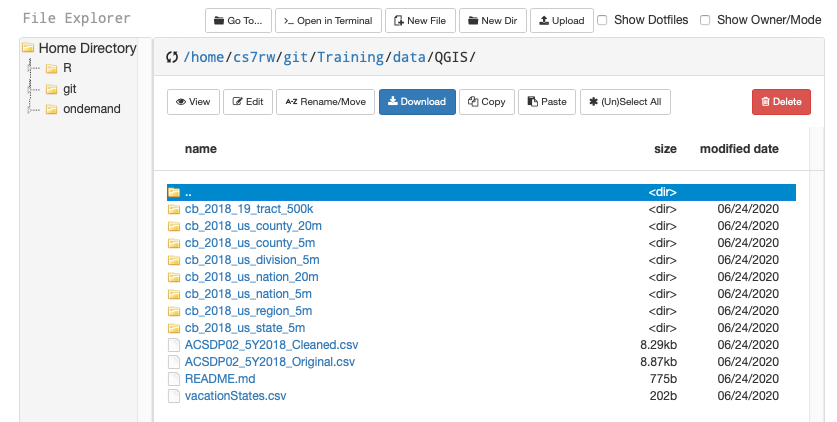 --- #### Software / Environment Setup type "git remote -v" to check your repo matches what is below. type "git pull" to update repo 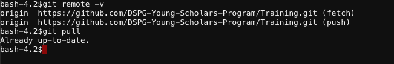 If you have a different Repo, you can remove the current remote repo with: “git remote remove origin” Then add the correct remote repo with: “git remote add origin https://github.com/DSPG-Young-Scholars-Program/Training.git” --- #### Software / Environment Setup 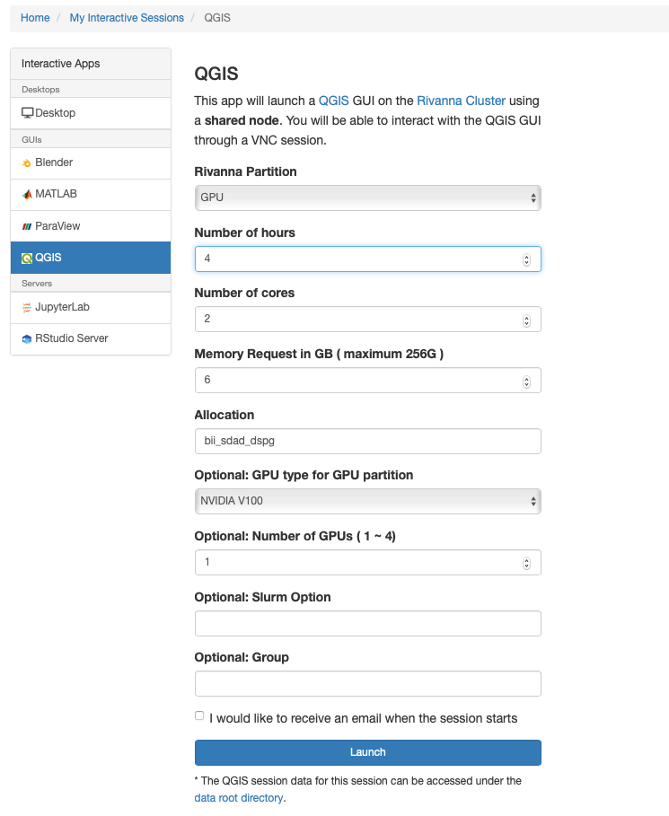 --- #### Software / Environment Setup 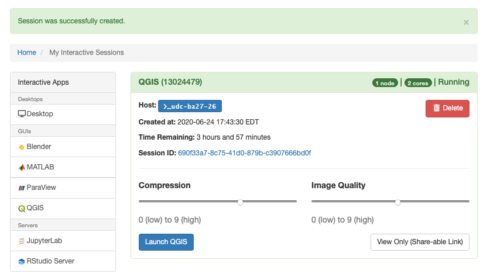 --- #### Intro to GIS: GIS Data Types - Vector data - Points - Lines - Polygons - Raster Data - LiDAR Data - Triangulated Irregular Network (TIN) #####Additional Resources - <a href="https://unearthlabs.com/gis-data/" target="_blank">Introduction to GIS Data</a> - <a href="https://www.gislounge.com/geodatabases-explored-vector-and-raster-data/" target="_blank">Types of GIS Data Explored: Vector and Raster</a> - <a href="https://gisgeography.com/spatial-data-types-vector-raster/" target="_blank">Vector vs Raster: What’s the Difference Between GIS Spatial Data Types?</a> 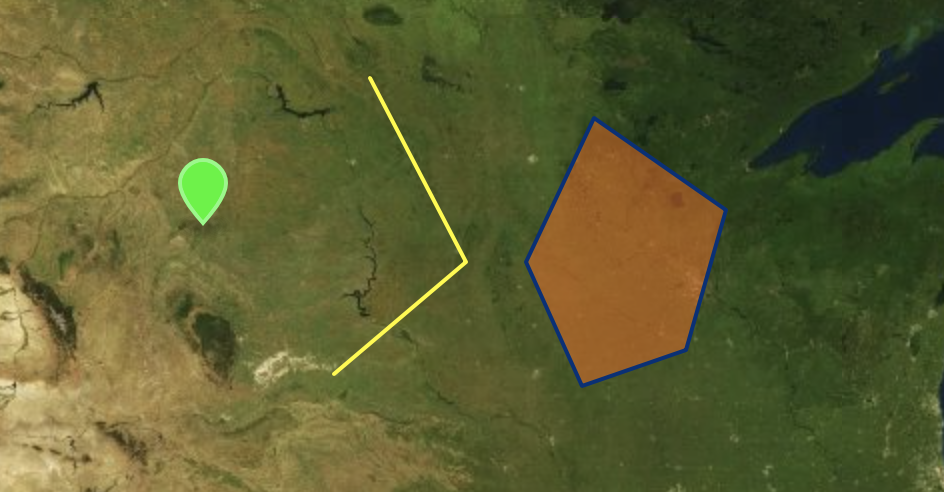 --- #### Intro to GIS: Raster Data Aerial imagery and weather radar <img src="tutorials/introGIS/raster.png" alt="" style="width: 90%;"/> --- #### Intro to GIS: LiDAR Derived Elevation 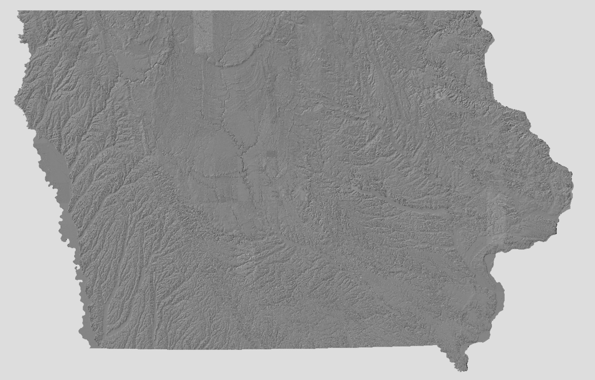 --- #### Intro to GIS We will start out by using a program that is not actually a GIS, but is a great helper tool for creating GIS files. Please open up GeoJSON.io and follow along! 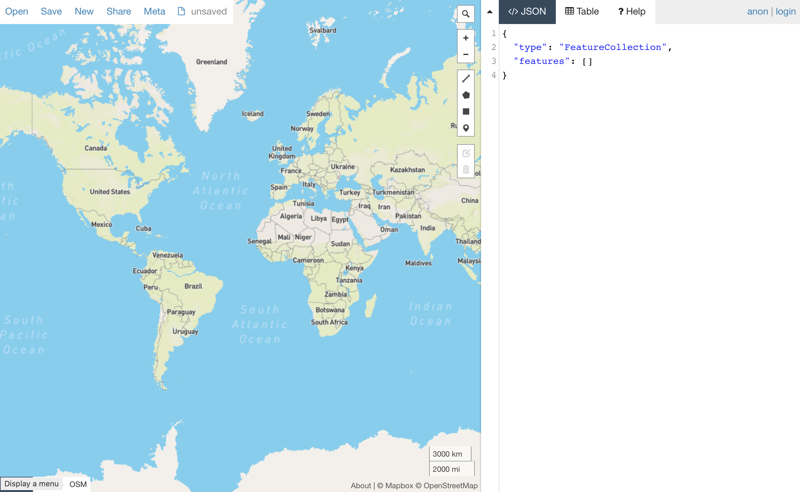 --- #### Intro to GIS: File formats There are several GIS file formats, a few common ones include: - Shapefiles (SHP) *A standard GIS format* - GeoJSON - GeoTIFF - GeoPackage *Common to QGIS and other opensource software* - CSV - KML/KMZ - Geodatabases GDB (commonly used in ESRI products) Shapefiles are made up of multiple files (green are required) 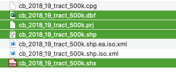 --- #### Intro to GIS: Shapefiles **.SHP** the main file, contains the shape coordinates: essentially describing all the basic shapes within the file. **.SHX** an index file, which helps the GIS software to find features more quickly within the main SHP file. **.DBF** a dbase file that contains all the attribute data for the features found in the .shp and .shx. **.PRJ** while not required, very desirable. This file contains information on which projection to use when displaying the data. --- #### Map Projections 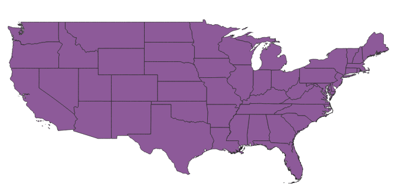 WGS 1984 Web Mercator Auxiliary Sphere 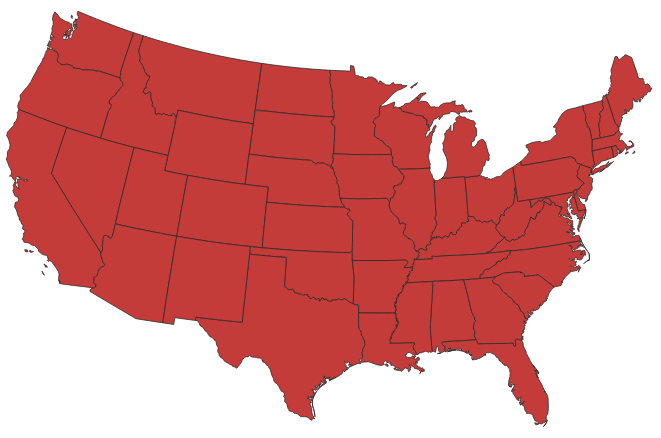 NAD 83 UTM 15N --- #### Map Projections <img src="https://images.newscientist.com/wp-content/uploads/2018/08/17165554/mercator_jpeg.jpg?width=800" alt="" style="width: 100%;"/> https://www.newscientist.com/article/2177132-new-world-map-is-a-more-accurate-earth-and-shows-africas-full-size/ --- #### GeoJSON and GitHub <img src=" https://2oqz471sa19h3vbwa53m33yj-wpengine.netdna-ssl.com/wp-content/uploads/2020/02/true-size-of-africa.jpg" alt="" style="width: 70%;"/> --- --- #### QGIS Interface 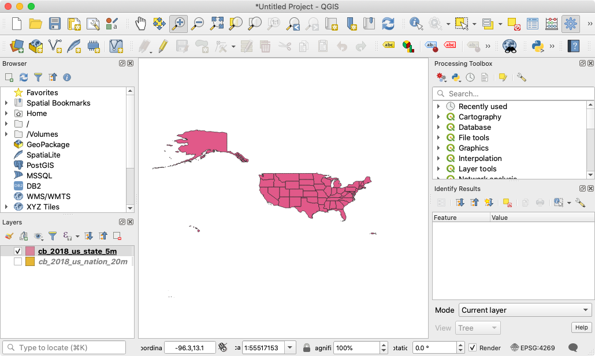 --- #### QGIS Import Sources 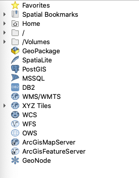 --- #### Customize Interface 1. Add Favorite link to the data directory and rename it DSPG Data 2. Manage and install two plugins - Processing - qgis2web 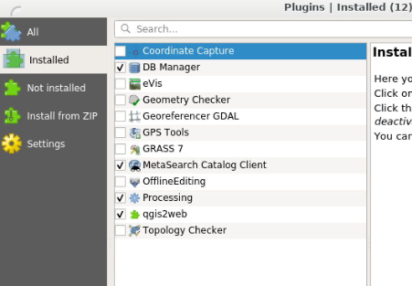 --- #### Add Data and Make a Thematic Map 1. Start a new map 1. Add the vacation.shp file --- Create an OpenStreetMap account <video preload="auto" width="100%" height="auto" data-setup="{}" controls><source src="prep/midwest.mp4" type="video/mp4" /></video>